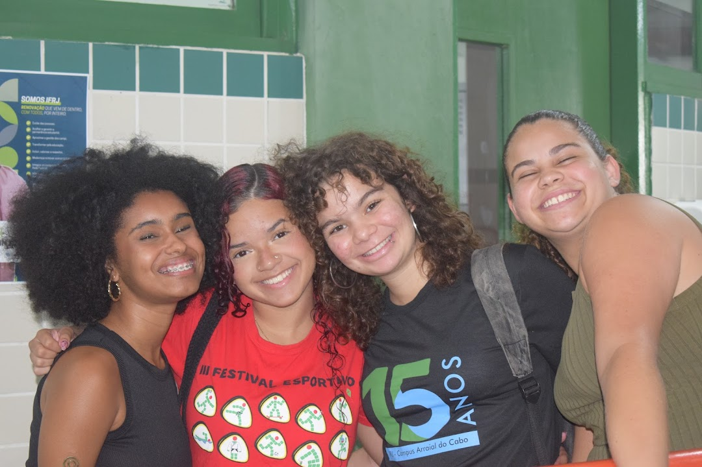

Minhas Amigas
Bia
Luiza
Jullia Rhaffik
Esse site foi feito para homenagear minhas amigas lindas e incríveis, mas eu briguei com a Bia no processo de construção, então finja que ela não existe

Desenvolvido por Júlia Martins de Oliveira - 2026